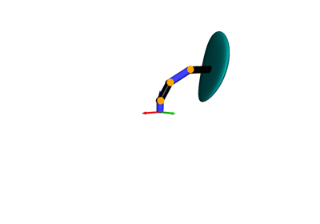

pytransform3d.visualizer.Graph¶
- class pytransform3d.visualizer.Graph(tm, frame, show_frames=False, show_connections=False, show_visuals=False, show_collision_objects=False, show_name=False, whitelist=None, convex_hull_of_collision_objects=False, s=1.0)[source]¶
Bases:
ArtistGraph of connected frames.
- Parameters:
- tmTransformManager
Representation of the graph
- framestr
Name of the base frame in which the graph will be displayed
- show_framesbool, optional (default: False)
Show coordinate frames
- show_connectionsbool, optional (default: False)
Draw lines between frames of the graph
- show_visualsbool, optional (default: False)
Show visuals that are stored in the graph
- show_collision_objectsbool, optional (default: False)
Show collision objects that are stored in the graph
- show_namebool, optional (default: False)
Show names of frames
- whitelistlist, optional (default: all)
List of frames that should be displayed
- convex_hull_of_collision_objectsbool, optional (default: False)
Show convex hull of collision objects.
- sfloat, optional (default: 1)
Scaling of the frames that will be drawn
- __init__(tm, frame, show_frames=False, show_connections=False, show_visuals=False, show_collision_objects=False, show_name=False, whitelist=None, convex_hull_of_collision_objects=False, s=1.0)[source]¶
Methods
__init__(tm, frame[, show_frames, ...])add_artist(figure)Add artist to figure.
set_data()Indicate that data has been updated.
Attributes
Expose geometries.
- property geometries¶
Expose geometries.
- Returns:
- geometrieslist
List of geometries that can be added to the visualizer.
- add_artist(figure)¶
Add artist to figure.
- Parameters:
- figureFigure
Figure to which the artist will be added.
Examples using pytransform3d.visualizer.Graph¶



Probabilistic Product of Exponentials
Probabilistic Product of Exponentials